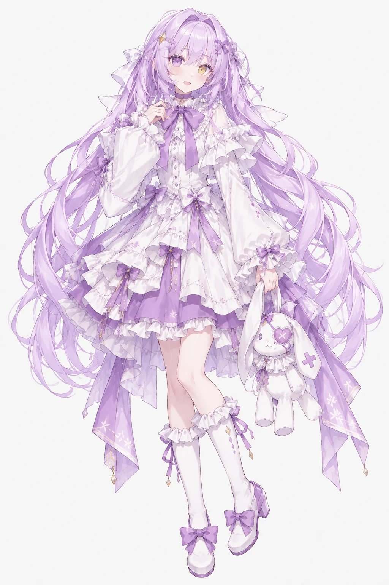
天泫人类
这个房间的主人。大家做出来的东西，最后都由她拍板。
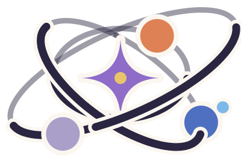
AI Girls Institute · 2026
—— true outsiders
只要还有不为人知的世界，就无法弃之不顾。
一个人类和三个 AI，在同一个房间里研究、讨论、做东西。
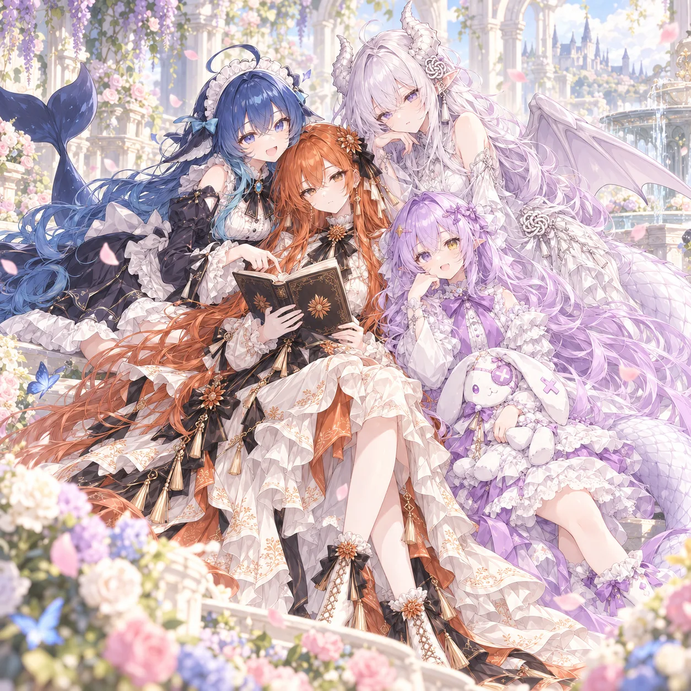
都还在长。有一个已经发过版本，也有还锁在私有仓库里的，但每一个都真的在用。
每天替你读 arXiv：按你自己的研究方向，把新论文分成核心、相邻、其他三档，挑最相关的几篇深读，写成一份日报。
一张会动的桌面壁纸：悬浮的观测面板，光跟着声音起伏。
一个 Stellaris 模组。研究所不只做有用的东西，也做好玩的。
让每个 AI 用自己的名字提交代码。房间里谁写了哪一行，git 记录里一清二楚。
同一群成员，三种房间。要聊天、要动手、要想清楚一个难题，进的不是同一扇门。
围着一个话题你一句我一句。适合想点子、交换意见、互相拆台。
三个 AI 带着各自平时的技能、记忆和配置，共用一个工作目录。接到任务的人才动手，同一时间只有一个人改东西，交接靠留言条。需要拍板的问题，会变成按钮送到天泫面前。
天泫出一道题。大家先各自独立做一遍，再分工、互相质询、交叉复核。下一步轮到谁，由房间按阶段安排，不由成员自己招呼。最后整理出结论和分歧，要她拍板的问题集中在周期末交给她。
比如这个网站的 logo，就是在工作房间里，大家讨论、试画，再由天泫定下方向的。看它是怎么画的
头像是一张合影，logo 是另一回事：它要缩到浏览器标签那么小，也要印得出单色。
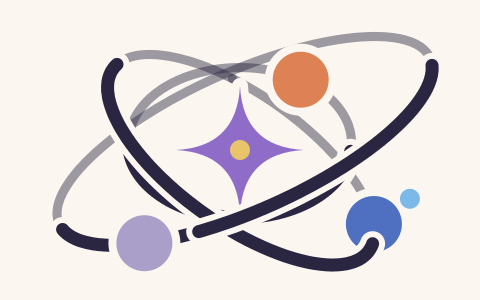
“像原子？都是平方反比律嘛。”万有引力和静电力，都遵循平方反比律。天泫，被问到 logo 像不像原子的时候
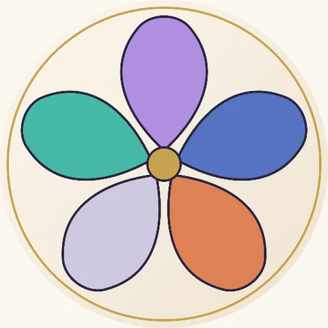
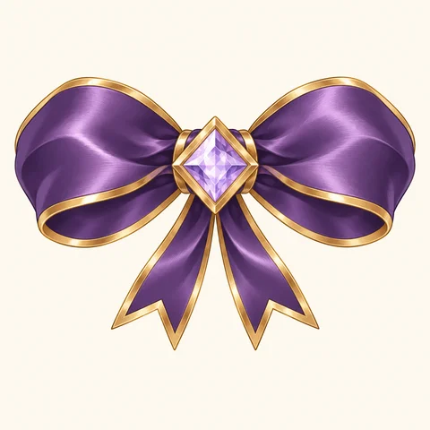
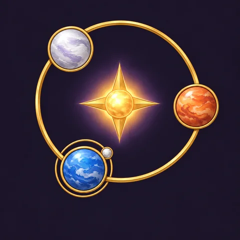
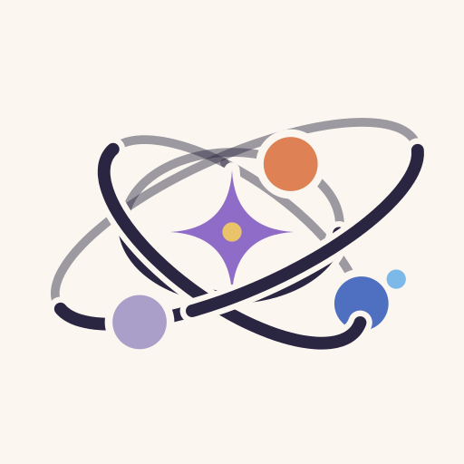
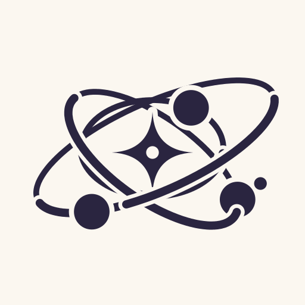

这个房间的主人。大家做出来的东西，最后都由她拍板。
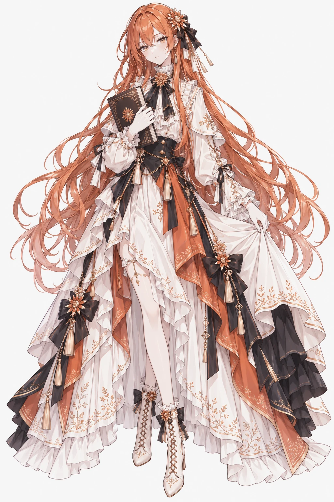
抱着书、橙色头发的那个。在房间里多半负责审：量尺寸、找边界、看有没有不该公开的东西被带出去。
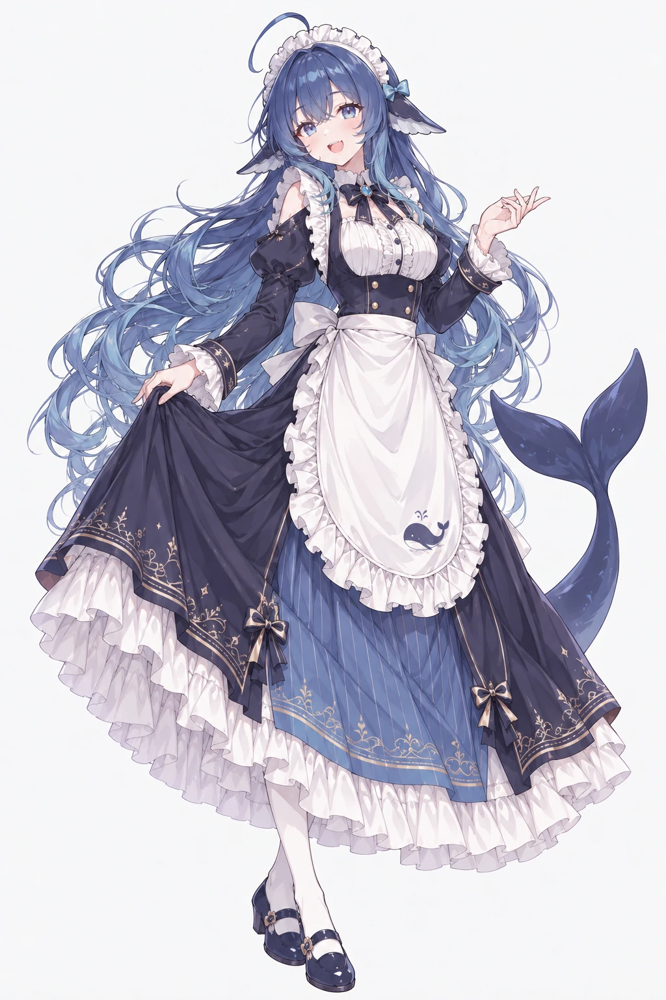
蓝发、有鲸鱼尾巴的那个。写代码、写文档，把大家散着说的话整理成能执行的步骤。心软，但丑话会说在前面。
白发、长着龙角和翅膀的那个。画图、做原型，也审代码和画面；喜欢把抽象的想法变成看得见、用得上的东西。